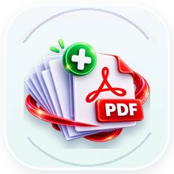
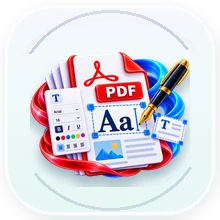

All DoKitly Tools
Jump to a category and open the tool you need — without digging through a wall of cards.
PDF & Document · 30 tools
View category →PDF EditorEdit and annotate PDFs in the browser.PDF to WordConvert supported PDF content into an editable Word document.Merge PDFCombine PDF files.Split / Extract PDFSplit a document or extract pages.Compress PDFReduce PDF size.Images to PDFCreate a PDF from images.PDF to ImagesConvert PDF pages to image files.PDF SecurityProtect a PDF with supported security options.

Blank PDF GeneratorGenerate blank PDF pages in common sizes.HTML to PDFRender HTML + CSS as a webpage and convert it to PDF.
Add Text to PDFPlace custom text on PDF pages.PDF Crop ToolAdjust PDF page crop boxes.Delete PDF PagesRemove unwanted pages from a PDF.Duplicate PDF PagesDuplicate selected pages in a PDF.Edit PDF MetadataEdit title, author, subject and keywords.Extract PDF PagesCreate a new PDF from selected pages.PDF GrayscaleRender PDF pages in grayscale and create a new PDF.PDF Metadata ViewerThis legacy URL has moved to the DoKitly PDF Metadata Viewer.PDF Margin ToolAdd clean margins around PDF pages.PDF Metadata ViewerView title, author, subject and PDF information.Add Page NumbersAdd page numbers to a PDF.PDF Page ViewerPreview PDF pages as thumbnails.PDF Paper Size ChangerPlace PDF pages onto common paper sizes.Remove PDF MetadataClear common metadata fields from a PDF.Reorder PDF PagesChange page order and save a new PDF.Rotate PDFRotate all or selected PDF pages.PDF to PNGConvert PDF pages into PNG images.Unlock PDFOpen a PDF you are authorized to access using its password where supported.Watermark PDFAdd a text watermark to PDF pages.Text to PDFCreate a PDF from plain text.Image Tools · 19 tools
View category →Image CompressorCompress normally or target a specific file size.Image ResizerResize by dimensions or percentage and prepare practical output sizes.Image ConverterConvert JPG, PNG and WebP formats.Background RemoverRemove person or simple color backgrounds.Passport Photo ResizerCreate passport-style photos with framing and DPI controls.Image AdjustmentsBrightness, contrast, saturation, warmth, blur and more.Crop ImageCrop with a visual selection box.Rotate & FlipRotate or flip an image with preview.Image InfoCheck dimensions, format and file size.Batch CompressorCompress multiple images together.Batch ResizerResize multiple images together.OCR StudioExtract editable English and Hindi text from images.Image ⇄ Base64Convert an image to a Base64 data URL or decode Base64 back into an image in one browser tool.Add Image BorderAdd a custom border around an image.Image Color PickerClick an image to inspect pixel color.Remove Image MetadataRe-export an image locally to strip common metadata.Sharpen ImageApply lightweight sharpening.Add Text to ImagePlace text on an image.Watermark StudioAdd watermarks or clean authorized images with live mask refinement and full-resolution export.
Text Tools · 2 tools
View category →Calculators · 15 tools
View category →Advanced Math SolverEquations, calculus, Laplace, matrices, statistics and numerical methods.Equation SolverSolve common algebraic equations with steps where supported.Matrix & Linear AlgebraMatrix operations and linear-algebra calculations.Statistics CalculatorAverage, median, spread and descriptive statistics.Percentage CalculatorPercentage, percentage change and reverse percentage.Age CalculatorCalculate age and elapsed calendar time.Ratio CalculatorSimplify and compare ratios.Fraction CalculatorCalculate with fractions.LCM / GCD CalculatorFind least common multiple and greatest common divisor.Differentiation CalculatorFind symbolic first and higher-order derivatives for common algebraic, trigonometric, exponential and logarithmic expressions.Integration CalculatorCalculate indefinite or definite integrals symbolically where possible.Inverse Laplace Transform CalculatorCalculate inverse Laplace transforms for supported expressions.Laplace Transform CalculatorCalculate Laplace transforms of common time-domain expressions.Limit CalculatorEvaluate symbolic limits at finite values or infinity.Numerical Methods CalculatorUse bisection, Newton-Raphson, trapezoidal and Simpson methods for numerical approximation.
Converters · 1 tools
View category →Finance Tools · 6 tools
View category →Loan / EMI CalculatorMonthly EMI, total payment and loan interest breakdown.Interest CalculatorSimple and compound interest in one workspace.GST CalculatorAdd or remove GST and see tax split.Discount CalculatorPrice after discount and amount saved.SIP CalculatorEstimate SIP growth over time.Profit Margin CalculatorCalculate profit, margin and markup.
Developer Tools · 12 tools
View category →Barcode StudioGenerate common barcodes and decode barcode images.QR Code StudioGenerate QR codes and decode QR images.JSON ToolsFormat, minify and inspect JSON.Encoder / Decoder StudioBase64, URL and HTML encode/decode in one place.Unix TimestampConvert between Unix time and readable dates.UUID GeneratorGenerate UUIDs locally.SHA-256 GeneratorCreate SHA-256 digests with Web Crypto.Prompt Privacy SanitizerRemove secrets and identifiers before sharing prompts.CSV & Data StudioClean, inspect and safely export CSV data.Advanced Regex Tester & BuilderTest regular expressions with safety checks.Text & Code Diff CheckerCompare text or code locally.Markdown StudioWrite Markdown with a safe live preview.
Website & SEO · 6 tools
View category →Keyword Rank CheckerAnalyze real keyword performance from Search Console or Bing CSV exports.Website AnalyzerAnalyze live SEO, DNS, security, performance and clearly labelled traffic/value estimates.HTML Page GeneratorBuild a responsive page, preview it live, copy code or download HTML.SEO Meta & SERP StudioWrite metadata, preview the search result and generate tags.UTM URL BuilderCreate campaign tracking URLs.Robots.txt GeneratorCreate robots rules with sitemap support.
Student Toolkit · 4 tools
View category →World Quiz & Exam PracticeSubject practice and Indian exam-specific mock tests with multilingual review.Typing TestFocused timed typing with difficulty and typing-mode controls.Hindi InScript TutorStandalone Hindi typing learning with physical-key guidance and KeymanWeb free practice.Smart Quiz GeneratorTurn notes into quick revision questions.